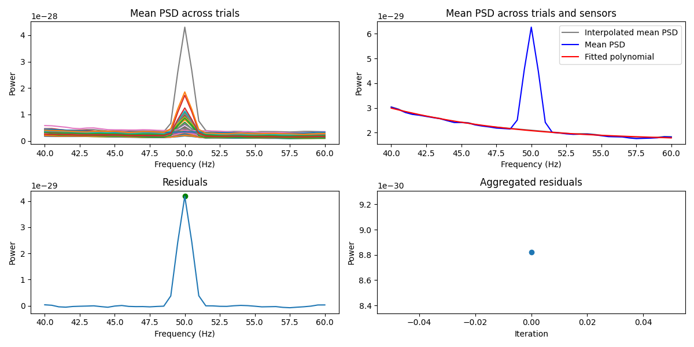
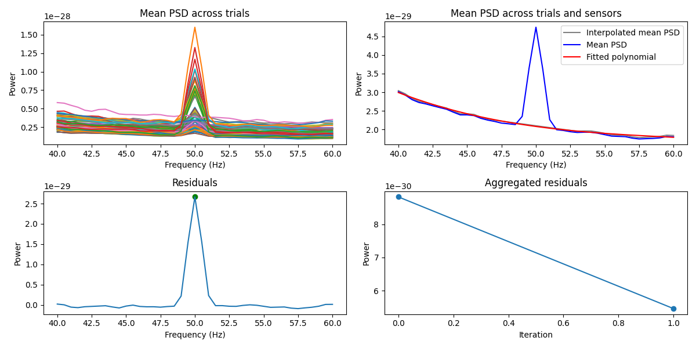

Note
Go to the end to download the full example code.
Remove line noise with ZapLine#
Find a spatial filter to get rid of line noise [1].
Uses meegkit.dss_line().
References#
# Authors: Maciej Szul <maciej.szul@isc.cnrs.fr>
# Nicolas Barascud <nicolas.barascud@gmail.com>
import os
import matplotlib.pyplot as plt
import numpy as np
from scipy import signal
from meegkit import dss
from meegkit.utils import create_line_data, unfold
Line noise removal#
Remove line noise with dss_line()#
We first generate some noisy data to work with
sfreq = 250
fline = 50
nsamples = 10000
nchans = 10
data = create_line_data(n_samples=3 * nsamples, n_chans=nchans,
n_trials=1, fline=fline / sfreq, SNR=2)[0]
data = data[..., 0] # only take first trial
# Apply dss_line (ZapLine)
out, _ = dss.dss_line(data, fline, sfreq, nkeep=1)
[PCA] Explained variance of selected components : 85.44%
Power of components removed by DSS: 0.82
Plot before/after
f, ax = plt.subplots(1, 2, sharey=True)
f, Pxx = signal.welch(data, sfreq, nperseg=500, axis=0, return_onesided=True)
ax[0].semilogy(f, Pxx)
f, Pxx = signal.welch(out, sfreq, nperseg=500, axis=0, return_onesided=True)
ax[1].semilogy(f, Pxx)
ax[0].set_xlabel("frequency [Hz]")
ax[1].set_xlabel("frequency [Hz]")
ax[0].set_ylabel("PSD [V**2/Hz]")
ax[0].set_title("before")
ax[1].set_title("after")
plt.show()
Remove line noise with dss_line_iter()#
We first load some noisy data to work with
data = np.load(os.path.join("..", "tests", "data", "dss_line_data.npy"))
fline = 50
sfreq = 200
print(data.shape) # n_samples, n_chans, n_trials
# Apply dss_line(), removing only one component
out1, _ = dss.dss_line(data, fline, sfreq, nfft=400, nremove=1)
(400, 64, 267)
Power of components removed by DSS: 0.00
Now try dss_line_iter(). This applies dss_line() repeatedly until the artifact is gone
out2, iterations = dss.dss_line_iter(data, fline, sfreq, nfft=400, show=True)
print(f"Removed {iterations} components")
- 
- 
Power of components removed by DSS: 0.00
Iteration 0 score: 8.822794656452163e-30
Power of components removed by DSS: 0.00
Iteration 1 score: 5.459918440185049e-30
Power of components removed by DSS: 0.00
Iteration 2 score: 1.8597061677694976e-31
Power of components removed by DSS: 0.00
Iteration 3 score: -2.8615714678066596e-31
Removed 3 components
Plot results with dss_line() vs. dss_line_iter()
f, ax = plt.subplots(1, 2, sharey=True)
f, Pxx = signal.welch(unfold(out1), sfreq, nperseg=200, axis=0,
return_onesided=True)
ax[0].semilogy(f, Pxx, lw=.5)
f, Pxx = signal.welch(unfold(out2), sfreq, nperseg=200, axis=0,
return_onesided=True)
ax[1].semilogy(f, Pxx, lw=.5)
ax[0].set_xlabel("frequency [Hz]")
ax[1].set_xlabel("frequency [Hz]")
ax[0].set_ylabel("PSD [V**2/Hz]")
ax[0].set_title("dss_line")
ax[1].set_title("dss_line_iter")
plt.tight_layout()
plt.show()
Total running time of the script: (0 minutes 13.069 seconds)